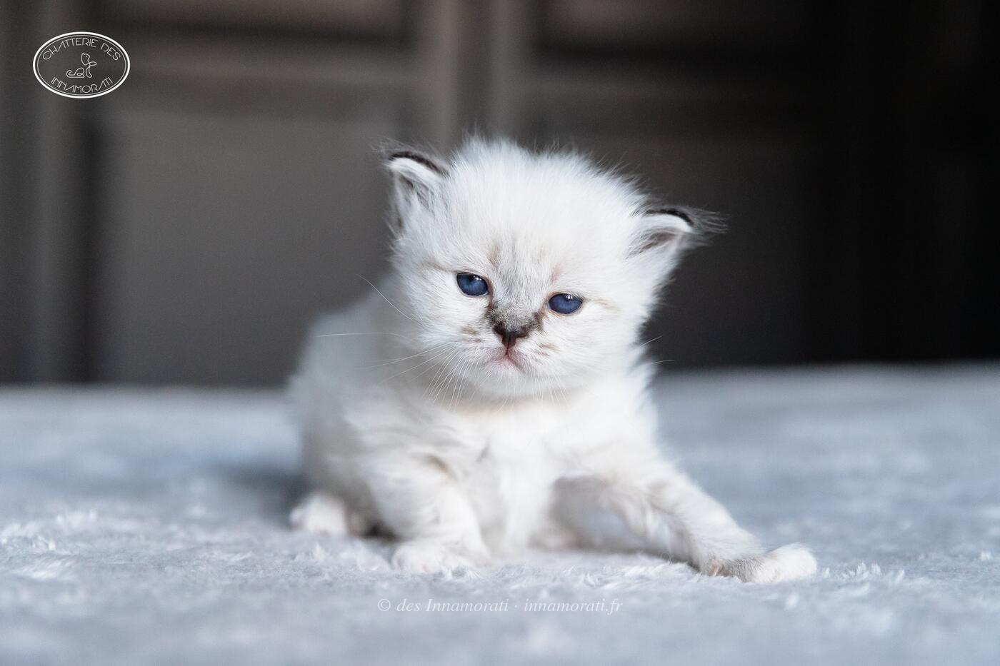

RobeFemelle · Seal tabby point
Naissance12 août 2019
StatutAdoptée retraitée
Album3 photos, de septembre 2019 à janvier 2020


Palmarès
3 expositions · 5 jugements2021
- St Seurin sur l'IsleCAC
2020
- ParisEXC1
- ParisEXC1
- LéognanEXC1 · BIV
- LéognanEXC2
EXC Excellent (classement) · CAC, CACIB, CAGCIB, CACS certificats de champion, champion international, grand champion international et suprême · CAP, CAPIB, CAGPIB, CAPS équivalents pour les chats stérilisés · BIV meilleur de la variété · NOM nommé pour le Best in Show · BIS Best in Show · BOB Best of Best, le meilleur de toute l’exposition
Photos réduites et marquées. Elles appartiennent à la Chatterie des Innamorati et ne peuvent pas être reprises dans une annonce.